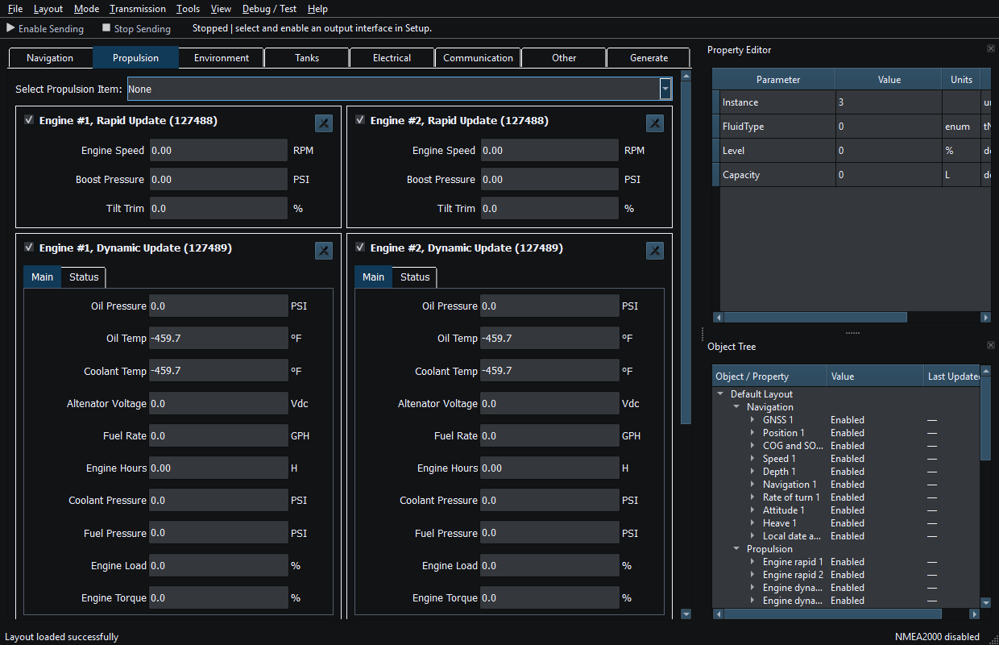
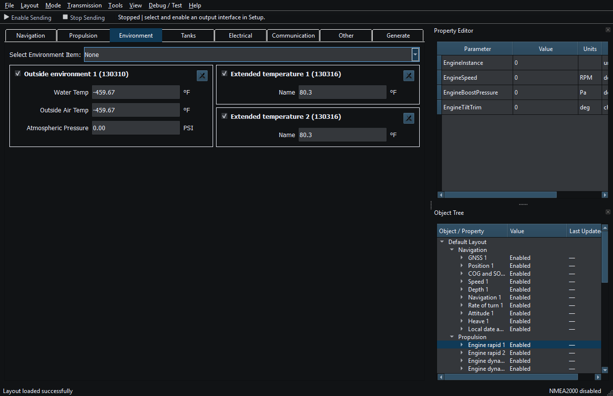
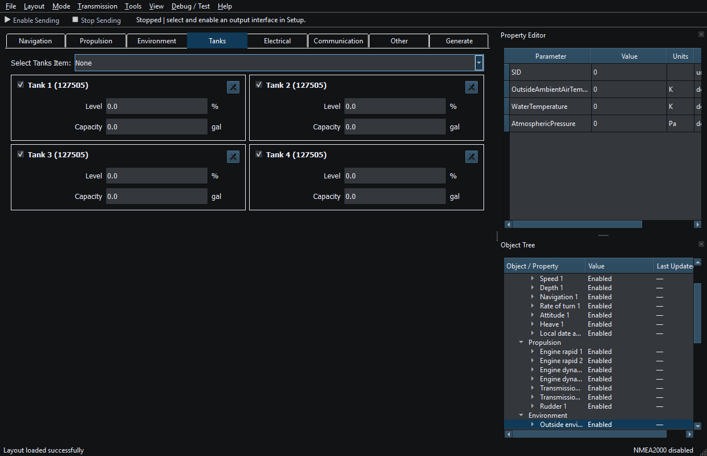
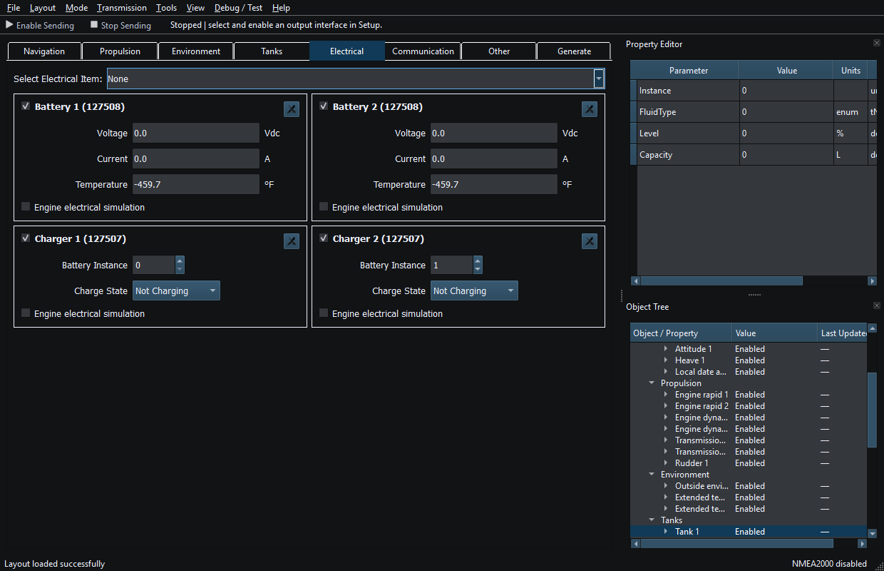
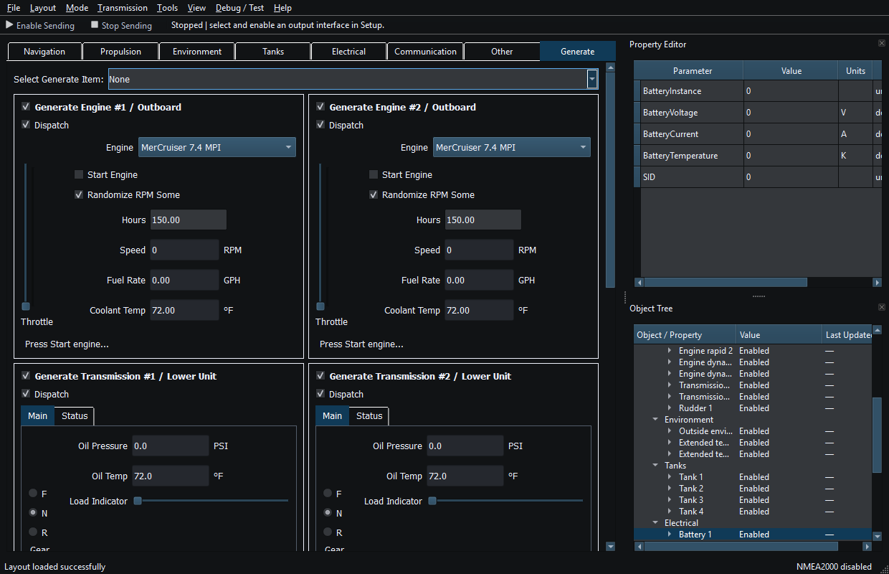

An instrument owns supported message properties and its individual Enable/reporting interval. A generator is an optional source of changing values. They are not interchangeable widgets.
Manually entered properties are sufficient for supported TX. See the PGN and sentence references for available fields and directions.
Generators update compatible instrument properties when their instances match. Add a source before or after its instruments. Removing it disconnects its updates; saved values remain until another source or received message updates them.
Viewer can discover supported instruments automatically from incoming messages and update matching source/instance identities. It does not create generator sources from RX. Two Date/Time or System Time widgets from different sources can be correct. Use Object Tree receive-source information and Diagnostics to identify them before removing one.
Unavailable means that a usable measurement is missing. Keep it distinct from a valid zero. When simulating a received snapshot, choose which fields remain manual and which generators may update them.

Figure 11. The Propulsion category groups related instruments and sources. Click to enlarge.

Figure 12. The Environment category groups related instruments and sources. Click to enlarge.

Figure 13. The Tanks category groups related instruments and sources. Click to enlarge.

Figure 14. The Electrical category groups related instruments and sources. Click to enlarge.

Figure 15. The Generate category groups related instruments and sources. Click to enlarge.
Main Window · Layout Management · Templates · Property Editor · Object Tree · Themes and Appearance · Keyboard Shortcuts · Connection Troubleshooting · Enable, Dispatch and Sending · Route Overview · Engineering Units